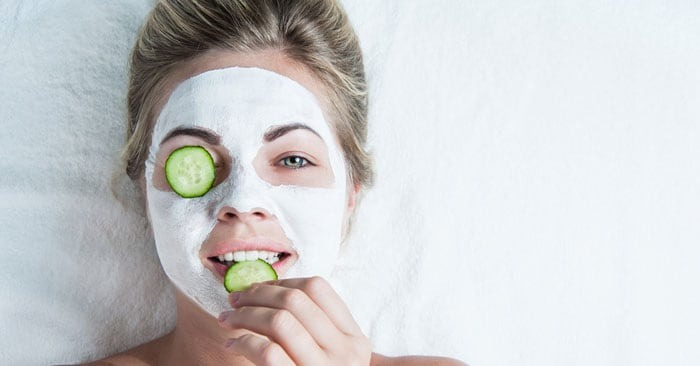

Mic ghid de frumusețe pentru femei
Am adunat cele mai bune trucuri de frumusete care functioneaza si dau rezultate,
uneori spectaculoase si mult peste asteptari.
1. Cum scapi de cearcănele inestetice
Ca să scapi de cearcăne în mod natural, secretul e chiar la tine în bucătărie. Acoperă ochii cu felii de
castravete, cartofi sau pliculețe de ceai verde, mușețel sau mentă, fierte și răcite înainte, și lasă-le să
acționeze timp de zece minute. Repetă acest tratament zilnic sau de câteva ori pe săptămână.
La fel de eficient este și uleiul de migdale, apa de trandafir și, bineînțeles, cât mai multă odihnă. Stresul
și lipsa somnului sunt principalele cauze care duc la apariția cearcănelor. Ședințele de yoga te pot ajuta
să reduci stresul și să te simți revigorată și odihnită.

2. Sfaturi ca să reduci ridurile
În primul rând, este important să te hidratezi, să folosești o loțiune cu factor ridicat de protecție solară
pe timpul verii și să te odihnești. Pe lângă cremele antirid cu acid hialuronic, este necesar să folosești și
o cremă hidratantă, de preferat cu ulei de cocos sau de argan.
O alimentație corectă, bogată în antioxidanți, este esențială pentru protecția împotriva radicalilor liberi
care afectează tenul și favorizează apariția ridurilor. Căpșunele, afinele, varza Kale, prunele,
rodiile, anghinarea, nucile pecan, zmeura și merele nu ar trebui să lipsească din alimentația ta
zilnică.
3. Soluția pentru tratarea porilor măriți
Menține întotdeauna tenul curat și demachiază-te înainte să te culci. Ca remediu natural și ușor de făcut
acasă, poți încerca un tratament cu aburi. Toarnă câteva picături de ulei esențial de eucalipt
(are
efect antibacterian) într-un vas cu apă fierbinte. Așază capul deasupra aburului, acoperă
capul cu un
prosop și stai așa timp de 10-15 minute. Clătește apoi cu apă călduță.
4. Scapă de coșuri și punctele negre
Ca să previi apariția coșurilor, este esențial să menții tenul curat. Demachierea și clătirea tenului cu apă
și săpun trebuie să facă parte din ritualul tău zilnic de îngrijire. Aplică apoi o cremă hidratantă
noncomedogenică.
Pentru punctele negre, cea mai eficientă soluție este să folosești măști de față naturale. Amestecă o
lingură de miere cu patru-cinci picături de suc de lămâie. Aplică pe zonele cu puncte negre, lasă să
acționeze timp de 20 de minute, apoi clătește cu apă din abundență. Mierea este hidratantă și îți va lăsa
tenul curat și catifelat.
5. Folosește măști naturale pentru un ten cu aspect sănătos
Măștile naturale sunt ideale pentru curățarea și hidratarea tenului. Însă, ca să obții efectele dorite, este
important să folosești masca potrivită pentru tipul tău de ten. De exemplu, pentru tenul acneic este
recomandată o mască cu ovăz și miere, în timp ce
pentru tenul sensibil este potrivită o mască cu morcov fiert.
6. Cum stimulezi creșterea părului
Ca să îți crească părul mai repede, cel mai important lucru este să te tunzi cât mai des. Vârfurile se
despică în timp și încetinesc astfel creșterea părului. În același timp, evită să te speli pe cap zilnic.
E recomandat să te speli pe cap de două sau de cel mult trei ori pe săptămână. Acest lucru permite
uleiurilor naturale să pătrundă în firele de păr și să le hidrateze, stimulând creșterea părului.
7. Cum să previi căderea părului
Masează scalpul folosind uleiuri esențiale, care accelerează circulația sangvină și ajută la creșterea
rapidă a părului. Repetă această procedură de câteva ori pe săptămână, timp de două sau trei
minute. Poți să folosești ulei esențial de lavandă, rozmarin, cocos, jojoba sau migdale.
Bineînțeles, uleiul de ricin este cunoscut pentru acest beneficiu, așa că poți să îl folosești cu încredere
dacă ai probleme cu căderea părului.
8. Clătește părul cu apă rece
Apa rece îți lasă părul strălucitor. Temperatura scăzută contractă rădăcina firelor de păr, ceea ce face ca
părul să rămână mătăsos mai mult timp.
9. Care e îngrijirea corectă a mâinilor
Mâinile au nevoie, în primul rând, de cât mai multă hidratare, în special în perioada rece, când pielea se
crapă cel mai ușor. Folosește o cremă hidratantă de cel puțin trei ori pe zi, după ce te-ai spălat pe
mâini înainte. Poți opta chiar și pentru unt de corp, ulei de cocos sau de măsline. Pe timpul verii poți să
folosești o cremă mai ușoară.
Pentru mâini catifelate, poți să aplici seara câteva picături de loțiune cu glicerină, de cel puțin două ori pe săptămână.
10. Albirea dinților la tine acasă
Dacă vrei să încerci un tratament natural acasă, periază dinții cu bicarbonat de sodiu de două ori pe
săptămână. Ca să menții cât mai mult timp efectele unui tratament de albire,
folosește o periuță electrică, de preferat una cu cap special de periere, care elimină petele de suprafață.
11. Cum scapi de celulită
Masează zonele afectate de celulită cu o perie specială. Acest masaj stimulează circulația sangvină și
drenajul limfatic și trebuie făcut pe pielea uscată, cu mișcări circulare.
Pe lângă masaj, poți încerca și scrubul cu zaț de cafea. Amestecă zațul de cafea cu ulei de cocos și
masează zonele cu celulită. Repetă acest tratament de două sau de trei pe săptămână.
12. Îndepărtarea părului nedorit fără să iriți pielea
Există diferite metode pentru îndepărtarea părului de pe corp, însă, dacă folosești lama de ras, trebuie
să știi că aceasta nu trebuie folosită pe pielea uscată, deoarece vei irita pielea, fapt care în
timp poate duce la apariția foliculitei. Aplică întotdeauna un gel special pentru ras.
O soluție eficientă este epilarea cu un aparat IPL, mai ales că te ajută să scapi de părul nedorit din orice
zonă a corpului pentru mai mult timp.
13. Cum exfoliezi pielea în mod corect
Exfolierea pielii trebuie făcută numai după duș, deoarece apa caldă va deschide porii și va ușura procesul
de curățare. Aplică loțiunea exfoliantă și masează pielea cu mișcări circulare folosind o perie sau un
burete, timp de două sau trei minute pe fiecare zonă. Oferă mai multă atenție genunchilor și
coatelor, unde pielea este mai aspră. Nu uita să aplici și o cremă hidratantă la final.
14. Nu uita să te hidratezi
Consumul de apă este benefic nu doar pentru sănătatea organismului, ci și ca să arăți și să te simți bine.
Apa ajută la detoxificarea organismului și la menținerea hidratării și elasticății pielii. În plus, te ajută
să previi apariția ridurilor și a coșurilor.
15. Pudrează-ți pleoapele pentru ca machiajul să reziste
De-a lungul zilei, pe suprafața pleoapelor se poate acumula sebum, o substanța uleioasă produsă de
piele care face ca machiajul să se întindă și să se șteargă. Dar dacă aplici puțină pudră pe pleoape
înainte și după ce te-ai machiat, aceasta va absorbi excesul de sebum și va ajuta machiajul să
rămână fixat.
16. Balansează ușor pensula de mascara de la stânga la dreapta în timpul aplicării
În loc să piepteni genele de jos în sus cu pensula de mascara, folosește și o mișcare ușoară de balansare,
de la stânga la dreapta. Vei observa o diferență majoră, pentru genele vor fi mai bine definite și
acoperite.